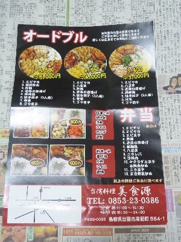
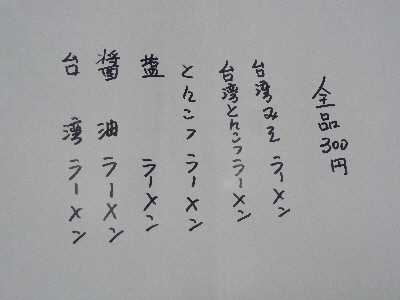
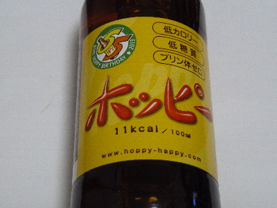
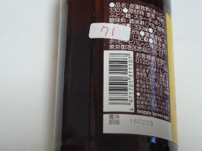
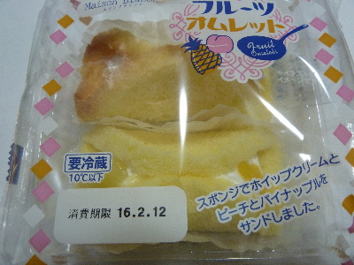
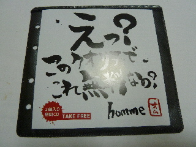
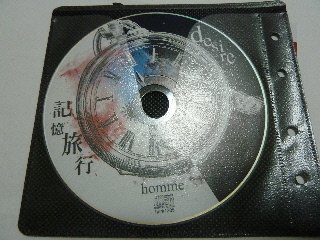

台湾料理美食源のチラシにインパクトがありました。
2016/09/15
新聞に台湾料理のお店の広告が入っていました。

表は普通にオードブルとお弁当です。

裏はマジック書きでラーメンのメニューがありました。
マジック手書きって...。なんか強烈です。
300円と安いので、ちょっとお店に行ってみたくなりました。
食べるなら何ラーメンがいいかなー。
2016/09/15
新聞に台湾料理のお店の広告が入っていました。

表は普通にオードブルとお弁当です。

裏はマジック書きでラーメンのメニューがありました。
マジック手書きって...。なんか強烈です。
300円と安いので、ちょっとお店に行ってみたくなりました。
食べるなら何ラーメンがいいかなー。
2016/09/11
早く出来ろ！って願ってたセブンイレブンですが、まだ行っていません。
実際あまり用事がないです。
一番の行きたい理由は、任天堂3DSのオリジナルコンテンツのダウンロードなんですが、
今サービスであるのは
パズドラクロスの限定ダンジョンしかないので、パズドラクロス持っていないので用がないです。
早く用事が出来ないかなー。
2016/02/12
ホッピーって名前を聞くけど、飲んだことなかったです。

試に買ってみました。

賞味期限が近いとゆうことで71円です。
お買い時です。
ホッピー自体はアルコールがほとんどないんですね。（0.8%）
焼酎とかのアルコールの濃いお酒と割って飲むものみたいです。
ちょっと面倒ですね。
2016/02/10
コスモスで見つけて、買って食べるようになりました。

2個入りで89円です。安い。
安いので気軽に買ってしまいます。
ホイップクリーム美味しいな。
果物も味のアクセントになってとってもいい。
2015/06/07

え？このクオリティで これ無料なの？って書いてあります。

ケースも立派だし、CDにも絵が描いてあって確かに「このクオリティで無料なの？」です。
CDを聴いた感想ですが、なかなか良かったです。「このクオリティで無料なの？」です。
曲と歌っている人の声が、なんとなく懐かしい感じがしました。
Hommeって書いてオムってきっと読むんでしょうね。
詳しくはオフィシャルホームページでどうぞ
http://1st.hommehomme.com/top.html
無料って危険な香りがします。